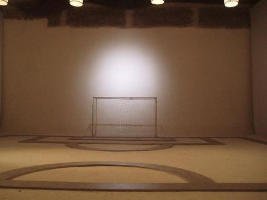
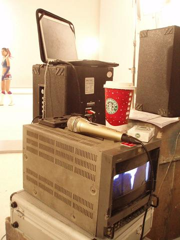
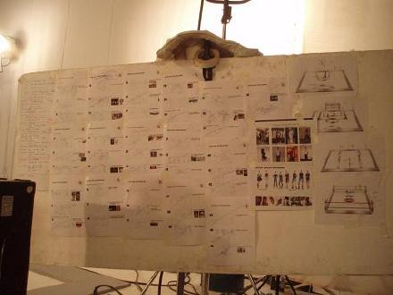
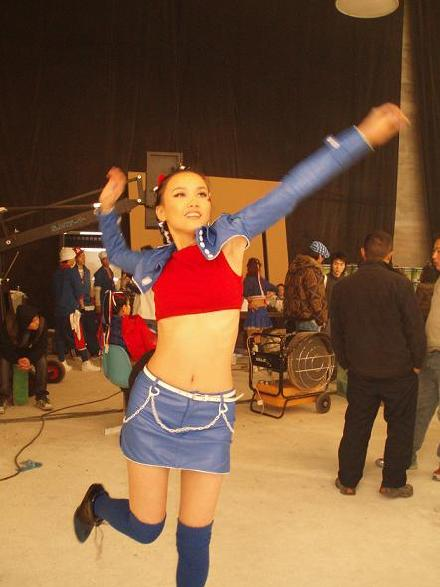
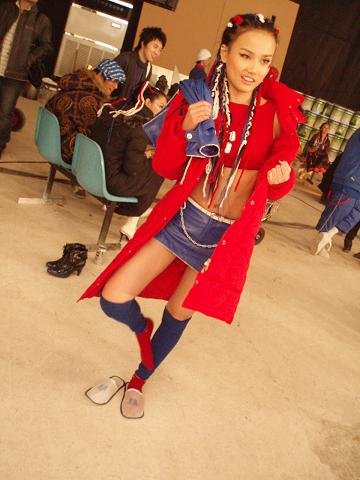

在棚内打了足球场,排球场,篮球场,还有拳击场,很厉害哦..
大家仔细看这个球门的网,有个很大的百事LOGO,真是无孔不钻噢!

三年前公司举办过一次马来西亚群星演唱会,我做为新人也参加了那次演出,当时请的是一位很年轻的香港导演来导的.太巧了,这次百事MV导演就是他,我有见到他就兴奋地不行了,哈,所以他之前对我就有了解,拍起来应该比较容易一点,还有我专辑里红眼睛的MV导居然也是他剪辑出来,我才知道给我拍红眼睛MV的导演张文华居然是他的师傅,原来他们是一起的.其实早就认识了,哈哈.太开心了,这样他拍我就更加得心应手拉.
其实导演是所有人当中最辛苦的,几天每睡觉嗓子也哑了,必须得用话筒才能帮大扩大音量.

这是第一天所有要拍摄的所有场景...

马上就要拍排球了,曾经是排球队队长的我已经六年没碰球了,要赶紧操练操练,其实我知道一定和当年没办法比了,但是造型一定要好看的
此图已被新浪删除，无法离线显示
高根鞋穿着,不但跳不起来,还脚指头巨疼无比...

哈哈哈哈,还好戴了拖鞋,我早有防备噢!
